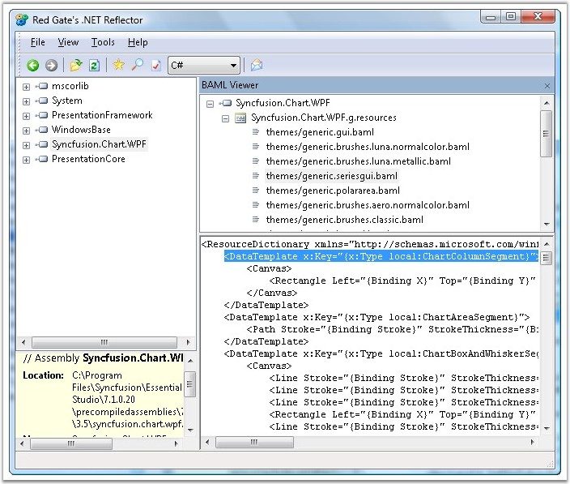

Embedded Chart Templates
Essential Chart for WPF uses several built-in templates to provide the predefined look and feel for several portions of the Chart. It is easy to view these templates by using the Reflector tool (with BAML Viewer add-in) as explained in the Viewing XAML resources using Reflector + BAML viewer topic.
Important Template Locations
The following are some of the important templates that you might be interested in and the corresponding XAML files containing their definitions.
· Chart Series segment templates (the templates for the different chart types like Column, Pie, etc.) - generic / generic.seriesgui.baml.
· Style for Chart, Chart Area, and so on - generic / generic.baml.
· Style for Chart Series, Chart Axis, and so on - generic / generic.base.baml.
The following screen shot illustrates the Reflector showing a Chart baml.

Figure 54: Reflector with Chart Templates